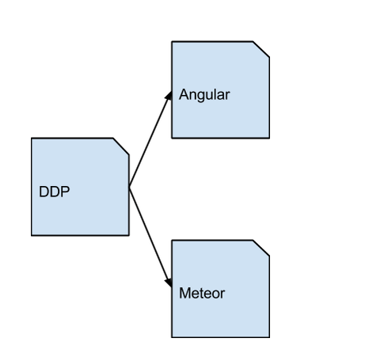
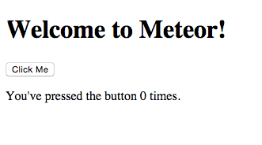
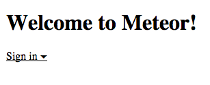
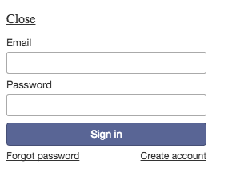
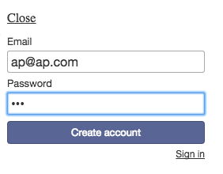
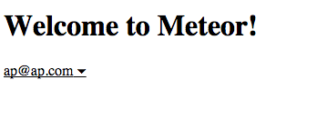
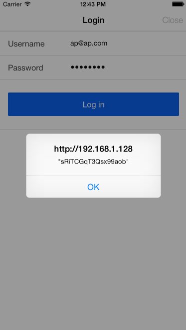
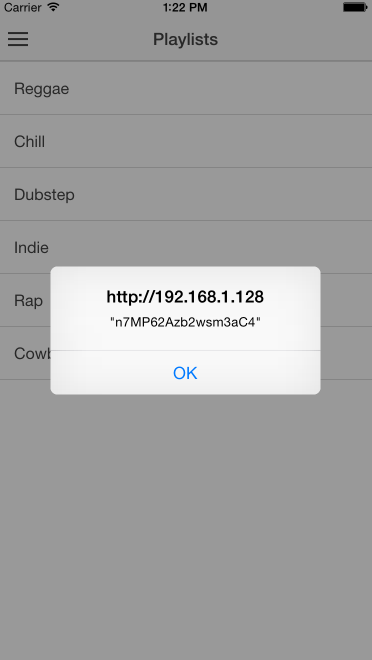
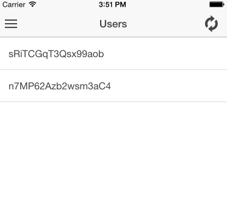

This tutorial will explore the fundamentals of the Asteroid api, which makes working with DDP a little easier. Much of this tutorial is focused on getting set up, which is the most difficult part and a complete example involving Meteor and Angular was lacking from any documentation. We get set up using Angular as our front end, Meteor as our backend, and a DDP connection to move data between them.
Code for this tutorial can be found on Github.
DDP is the power behind the Meteor Distributed Data Protocol. It’s a protocol that serves the same basic functionality as a REST API but it does so using websockets. Using DDP, you can call remote procedures from the client side to the server, just like calling a REST API, though the code to do so is different, and the connection is different. With this type of connection, it is possible to subscribe to a set of documents (we’re in MongoDB land, not SQL) from the client and automatically be updated when the contents of those documents change. You can familiarize yourself with the concept of pubish/subscripe (a.k.a. pub/sub) here. Pretty cool right? No more polling for changes! We will be using and exploring the Asteroid API, which is a wrapper around DDP that makes working with DDP a little more straightforward.
We’re going to step through getting set up, how to handle user authentication, and how to build out your app from there. Then, we will explore some of the other API's that Asteroid has to offer so you can take this seed project and build something awesome.
I’m not going to do an introduction on Meteor. I will have all the instructions here for you to get started but if you run into trouble with anything other than the DDP implementation, I’ll have a few resources along the way to point you to. For example, if you have trouble getting Meteor set up, they have a great quickstart guide you can read here to get set up and continue back here when you’ve caught up. Here is our folder structure to start out with:
In order to simplify this tutorial, we will be using Ionic to build our mobile app, which I'll call our front-end and will refer to Angluar from here on out. We are going to install Meteor in the Meteor folder and Ionic in the Angular folder. To begin, follow these steps in your console:
mkdir DDP
cd DDP
// for OS X
curl https://install.meteor.com/ | sh
// We're creating a new project called Meteor, it will install meteor for us and create a new folder.
meteor create Meteor
// hop into the folder you just created
cd Meteor
/* Run meteor in the console to start meteor. If everything works you should see
* => Started proxy.
* => Started MongoDB.
* => Started your app.
* => App running at: http://localhost:3000/
*/
meteor
Now, point your browser to http://localhost:3000/. You should be able to see this:
Not very exciting but we're just getting started. One more step for Meteor and we should be able to start using DDP. We’re going to install a meteor package allowing us to login securely and a small UI for our login system.
// hit control c in the terminal window with the meteor server running to shut it down. Then do:
meteor add accounts-password
meteor add accounts-ui
meteor
// Meteor should fire back up again on port 3000.
Lets do a little context switching and get Angular up and running. Keep the Meteor server running in the background, we’ll be using that connection shortly.
Keep in mind, this implementation of DDP keeps our front end and our back end completely separate. When used this way, it is possible to use Meteor as a backend framework. Why might you do this? A few reasons. If you’ve ever built something where you needed to roll your own REST API, you know how much work that can be. Using Meteor is dead simple, has an excellent community, and a ton of packages that make rapid prototyping fast and fun. This would be a great stack for a front end developer learning how to build a solid backend. Another reason is that building native-feeling mobile apps with Meteor's front end using Cordova isn’t great. It’s clunky and needs a lot of work to be ready for mobile whereas something like Ionic and Angular is production ready out of the box.
Because we are building a (hybrid) mobile app, it’s time to mention from here on out, I am assuming you are on a Mac. Meteor support for Windows exists but is very new, and the DDP protocol for Windows is also new. There shouldn’t be that much of a difference after install between this tutorial on a Mac or Windows but it’s worth making explicit.
If you do not have npm installed yet read this and come back.
If you do not have Xcode installed yet, read this and come back.
// in a new terminal window, jump back one folder
cd ../
// if you've never installed Ionic before and you already have npm, run
npm install -g cordova ionic
// then run this to install Ionic in a folder called Angular and seed the project with
// Ionic's sidemenu template... and you thought those off-canvas side menu's were hard to do!
ionic start Angular sidemenu
// jump into our angular folder
cd Angular
ionic platform add ios
ionic build ios
ionic emulate ios -l -s -c
Awesome! So far we have two servers running. One at localhost:3000 and another at http://your_routers_ip:8100. When you run the ionic emulate command, look for this:
Running dev server: http://192.168.1.119:8100
You can just close out the ios simulator if you'd like and navigate to the address from your browser, or continue to use the simulator. Another note: At this point, both servers are using something called live reload. This means throughout this tutorial, any changes made to your files will automatically be reflected in both the meteor app and the angular app. No more page refreshing to see your changes!
We will be using bower to install DDP. If you don't have bower yet, you can get it here
// hit control C in the terminal window with the Angular server running to make it stop. Then do:
bower install q --save-dev
bower install asteroid --save-dev
bower install ddp.js --save-dev
// the --save-dev will update our bower.json for us.
// start the server again
ionic emulate ios -l -s -c
// in Angular->www->index.html
// now in our index.html file in the Angular folder, we need to add our new bower components
// add this below your corodva.js <script> in your index.html file
<script src="lib/ddp.js/src/ddp.js" > </script>
<script src="lib/q/q.js"></script>
<script src="lib/asteroid/dist/asteroid.browser.js"> </script>
Okay, we’re ready to start diving into the DDP API and all it can do for you. Let’s start with something that usually takes hours and see how it can be done with Meteor in minutes. We already installed the Meteor package that allows us to login securely. We’re going to create a user on the Meteor side and then login that user from Angular over DDP.
Navigate to Meteor.html in your Meteor folder
// in Meteor->Meteor.html : Replace
<template name="hello">
<button>Click Me</button>
<p>Youve pressed the button {{counter}} times.</p>
</template>
// with
<template name="hello">
{{> loginButtons}}
</template>
Now when the page reloads, you should see:
Click on Sign in, and in the bottom right corner, click create account:
We’re going to create a user with email: ap@ap.com and password: password. Just as an FYI, the password is encrypted using Bcrypt out of the box! This will not be the case when sending a password over the wire with our Angular app and if you're going to handle sensitive data like passwords, please do so over SSL.
At this point you have just created a user and have automatically been logged in.
At this point, we are ready to connect our Angular app to our Meteor app using DDP. We will create a global variable for our connection. This is bad form and is used here to simplify the tutorial.
// Creating our DDP connection
// in our in Angular->www->js->controllers.js find our .controller function and add our connection
// our DDP connection.
var Connect = new Asteroid("localhost:3000");
angular.module('starter.controllers', [])
.controller('AppCtrl', function($scope, $ionicModal, $timeout ) {
// When the login event is emitted, this function will run.
Connect.on('login', function(obj) {
alert(JSON.stringify(obj));
});
// Keep the other stuff that was already there
}
Our 'Connect' variable holds our connection to our Meteor app, which is running on localhost:3000. So what’s going on here? Well, we are using the SockJs protocol to create the connection. This still uses websockets, which you can read more about here but in its simplest form, a websocket starts a connection with the regular HTTP request but asks the server if it can establish a WebSocket connection. Think of this as a special type of handshake request. If the server supports this type of connection, it ‘upgrades’ the regular HTTP request through the WebSocket protocol and keeps the connection open (bi-directionally) without having to send all the headers, cookies, and other overhead each time you want to exchange data. In short, welcome to the foundation of real-time.
We are making use of Asteroids .on() API here, which takes an event and a callback function. The events are limited to connected, login, and logout. These are currently the only events emitted by an Asteroid instance. The callback will handle what to do when the promise resolves. This would be a great place to route the user to secure pages after they authenticate.
The callback is passed one parameter when it is resolved. In the code sample above, we are passing an anonymous function with one parameter as our callback and that parameter will contain the user id of the logged in user if authentication is successful. If authentication fails, the promise will be rejected with an error. If you're unfamiliar with promises, now would be a good time to read this, the Asteroid API uses promises extensively. If our authentication succeeds, we are going to JSON.stringify() the result and alert it to the screen.
Taking a step back, lets take a closer look at the Asteroid instance we are creating. Again, Asteroid is a wrapper over DDP.
new Asteroid(host, ssl, interceptor);
The host is our localhost:3000 which is where our Meteor app is running. The host is required and will need to be changed if the Meteor app were to be deployed to a production server. The second option allows us to use SSL. In our case we will not be using SSL and since the default is not to use SSL, we can omit this parameter. Note that our passwords will be going over the wire from the client to the server in plain text. Again, if you’re going to use this for any sensitive data, please do so over SSL.
The third parameter is also optional and intercepts any socket event. It is called with an event object so you can get all the information relating to a particular event including timestamp, name, payload, etc. This would be a good place to verify the server the client are communicating properly. If you pass interceptor a function that logs out the one variable passed in, you will be able to see any and all data transfers which can be useful for debugging.
Now let’s try and login using this same username and password combination from our angular app. We will be using the API Asteroid.loginWithPassword(email,password). Something a little funky and uncharacteristic is that it does not take a callback. What it does is provide a promise that is resolved when the login completes. If there is an error, it means the credentials supplied were incorrect, otherwise it will return the logged in user id via the function we wrote earlier (the Connect.on('login')... Let’s log in now and verify our login id on the client with the one on the server for fun.
// in Angular->www->js->controllers.js find
// Perform the login action when the user submits the login form
$scope.doLogin = function() {
console.log('Doing login', $scope.loginData);
// Simulate a login delay. Remove this and replace with your login
// code if using a login system
$timeout(function() {
$scope.closeLogin();
}, 1000);
};
// were going to modify this function to actually log us in instead of simulating a login.
// From meteor, our user object so far looks like this:
{_id: "sRiTCGqT3Qsx99aob", emails: [ { address: "ap@ap.com", verified: false}]};
// essentially we have a mongodb generated _id, and our email address. Notice our password isn't anywhere
// on the user object. This is some Meteor magic, for now we will trust it's somewhere.
Notice above the $scope.loginData. This object is holding our username and password fields from the form on the login.html page in our angular app. To access our username we just need $scope.loginData.username, and our password is at $scope.loginData.password. We will need these two strings to pass to our function we are going to call on the Meteor server. Note that although it is called username here, it is actually our email address. Recall that when we created our user on the meteor side, there were two fields, email and password. We will be using Meteor’s logging in with password method, just don’t get confused because it’s called username on the Angular side. The only reason I’m not changing it on the Angular side is so we can focus on the Asteroid API.
Change your $scope.doLogin function to look like this:
// Perform the login action when the user submits the login form
$scope.doLogin = function() {
//Connect.loginWithPassword($scope.loginData.username, $scope.loginData.password);
Connect.createUser($scope.loginData.username, $scope.loginData.password);
$scope.closeLogin();
};
Remember that the Connect variable holds our connection. Swipe open the menu and click on 'Login'. Enter 'ap@ap.com' for the username and 'password' as the password. Success should look like this:
Notice that our user id is the same on the client as it is on the server. Awesome!
So what else can we do? Actually we could have created our first user on the client instead of on the server. Let’s try that next. The method is
Asteroid.createUser(usernameOrEmail, password, profile);
which is very similar to the Asteroid.loginWithPassword method. We will only be using two of the three parameters here. Again the usernameOrEmail parameter will just be an email address but it is possible to do authentication with a username instead of an email address. The password parameter is a string and is required. The third parameter is the profile parameter which needs to be an object. It will attach anything you put in there to a property on the user object under user.profile. This is where you could store additional user parameters like an address or site preferences, etc. For now, we will leave it off, it is not required.
Instead of creating a new form, lets comment out our old code and try and create a user with the same UI.
$scope.doLogin = function() {
//Connect.loginWithPassword($scope.loginData.username, $scope.loginData.password);
Connect.createUser($scope.loginData.username, $scope.loginData.password);
$scope.closeLogin();
};
This method also doesn’t return anything. It will automatically log the person in if the creation is successful or it will throw an error. If creation is successful, it will log the user in and call the .on() method causing our new user’s id to be alerted to the window.
Success should look like our previous login attempt, except the id will be different this time.
Thats pretty simple. Now lets look at logging our users out. To do this we will need.
Connect.logout();
This API doesn’t take any parameters and doesn’t return anything. It will, however, emit a ‘logout’ event so we can notify the user that they have logged out.
We’re going to use the button on the form to initiate a logout.
// beneath our Connect.on('login' ...)
Connect.on('logout', function() {
alert("logged out");
})
// a little further down in the controller
$scope.doLogin = function() {
// for logging in
//Connect.loginWithPassword($scope.loginData.username, $scope.loginData.password);
// for creating users
//Connect.createUser($scope.loginData.username, $scope.loginData.password);
//for logging out
Connect.logout();
$scope.closeLogin();
};
Now when we hit the ‘log in’ button, we will actually be logging out the currently logged in user.
Now lets move on to some custom server calls and a few other features DDP and the Asteroid API offers.
Let’s create a server query that returns all of our user id’s and load them into our angular application. To do this we will need to modify a few files.
// angular/www/js/app.js
//inside the .config, add
.state('app.users', {
url: "/users",
views: {
'menuContent': {
templateUrl: "templates/users.html",
controller: 'UsersCtrl'
}
}
})
// at the bottom of app.js
$urlRouterProvider.otherwise('/app/users');
// rename playlists.html to users.html in angular/www/templates/playlists.html
// replace the entire page with this
<ion-view view-title="Users">
<ion-nav-buttons side="right">
<button class="button button-icon icon ion-loop" ng-click="refreshUsers()"></button>
</ion-nav-buttons>
<ion-content>
<ion-list>
<ion-item ng-repeat="user in users">
{{user._id}}
</ion-item>
</ion-list>
</ion-content>
</ion-view>
// in angular/www/js/controllers.js find the 'PlaylistsCtrl' and replace it with
.controller('UsersCtrl', function($scope) {
$scope.users = [];
$scope.refreshUsers = function () {
var userCollection = Connect.getCollection('users');
var allUsers = userCollection.reactiveQuery({});
$scope.users = allUsers.result;
}
})
// if you want to be really thorough, replace the list item in menu.html for playlists with
<ion-item menu-close href="#/app/users">
Users
</ion-item>
To check if this is working, hit the refresh button on the top right of the users page. You should see the ids of the two users we created during this tutorial.
Success should look like:
We’re using two additional APIs to do this. The first is Asteroid.getCollection(name) which hooks into the ddp connection and connects directly to a MongoDB collection. We are using the users collection to get the ids of the current users in the database. What’s great about Asteroid is that it will auto create a collection for you if one doesn’t already exist without touching the backend. Just to be clear, this is not getting the collection from the database and pulling all the data down to the client. It is keeping a direct connection open to a specific collection. We then query or perform basic CRUD on that connection.
The next method we use is the Collection.reactiveQuery(selector) which will allow us to query the collection instance and get results back just as if we were doing a regular HTTP call.
In this example, we’re running the reactiveQuery function with an empty object to return everything we can about the user and storing it in a property we can use to ng-repeat over it.
Lets explore a few more of the methods that Asteroid has to offer and from here you should be able to implement some more cool things on your own. I’ll use the code from previous examples to demonstrate the usage of the APIs below.
If you’re not familiar with pub/sub, read this.The subscribe function needs some code on the backend before it can work properly.
In your Meteor.js file add:
if (Meteor.isServer) {
Meteor.publish(users, function() {
return Meteor.users.find({});
})
}
Make sure this is wrapped in a Meteor.isServer statement. In a larger meteor project you would separate out your files into separate folders that only run in the front end or the back end but for simplicity, we can use the Meteor.isServer statement to make sure we’re running code in the right environment.
We have just prepped our back end to publish our users collection. We could pass query parameters in as an array if we wanted to return only a subset of the collection.
In your collection.js file add:
var userSubsription = Connect.subscribe('users');
We now have a subscription instance that will automatically update based on changes in the server. For instance, if we had two people running the app, and one added a new user, both apps would immediately reflect the current state of the database. You would need to tell Angular that you want it to update whenever changes are made to this object. You can read about Angulars $watch here.
If you are having trouble initializing the subscription, try doing something like this:
// Connect is our DB connection
var userSubsription = Connect.subscribe('users');
// using Q.all is great if you had more than one .subscribe you were waiting on, just put the others in the array.
var allSubscriptions = Q.all([userSubscription.ready]);
allSubscriptions
.then(function(result){
console.log(result);
var users = userSubscription.getCollection("users");
var coolUsers = users.reactiveQuery({
cool: true
});
console.log("cool users : ", coolUsers.result);
return result;
})
.fail(function(fail){
console.log("failed! ",fail);
})
.done();
The docs show a synchronous example but it seems to be more reliable if you initialize it asynchronously.
This is just like making a Meteor method call but we can do so from our Angular app. The parameters here are a list, so each parameter you put after the method will get sent to the server. Let's say we had a method called getUserIds on our Meteor server that took one parameter called limit and returned 'limit' number of the most recently added user IDs, we could call this method with:
// Connect is our DB connection
var userIds = Connect.call('getUserIds', [5]);
// remember that .call returns a promis object with two properties, result and updated.
userIds
.then(function(result){ console.log(result) })
.fail(function(err){ console.log(err)})
.done();
This is the same as apply, except that the params here is an array, so the array gets sent up to the server. It is optional in case your method doesn't have any parameters.
We took a look at this already in the tutorial. Just to refresh, take a look at the sample code from above.
// in angular/www/js/controllers.js find the 'PlaylistsCtrl' and replace it with
.controller('UsersCtrl', function($scope) {
$scope.users = [];
$scope.refreshUsers = function () {
var userCollection = Connect.getCollection('users');
var allUsers = userCollection.reactiveQuery({});
$scope.users = allUsers.result;
}
})
We have a Mongo collection names users that holds all of our user data. This creates (if a collection doesn't already exist) or returns a reference to the collection.
This will do what you expect. It inserts an item into the collection. Item is an object and must be serialized JSON. It will return a promise object with a local and remote property. It will auto generate the _id if it inserts successfully.
// Connect is our DB connection
var userCollection = Connect.getCollection('users');
userCollection.insert({"name" : "Andrew"});
// remember that .insert returns a promis object with two properties, local and remote.
userCollection
.then(function(result){ console.log(result) })
.fail(function(err){ console.log(err)})
.done();
This updates an item in the collection. The item is an object and must be serialized JSON. The id is the Mongo _id of the document. It will return a promise object with a local and remote property.
// Connect is our DB connection
var userCollection = Connect.getCollection('users');
userCollection.update("super_long_mogno_id", {"name" : "Andrew"});
// remember that .update returns a promis object with two properties, local and remote.
userCollection
.then(function(result){ console.log(result) })
.fail(function(err){ console.log(err)})
.done();
This removes an item in the collection. The id is the Mongo _id of the document. It will return a promise object with a local and remote property.
// Connect is our DB connection
var userCollection = Connect.getCollection('users');
userCollection.remove("super_long_mogno_id");
// remember that .remove returns a promis object with two properties, local and remote.
userCollection
.then(function(result){ console.log(result) })
.fail(function(err){ console.log(err)})
.done();
This will return an array of items in the collection that matched the query. We walked through it in the tutorial. To refresh here is the code snippet:
// in angular/www/js/controllers.js find the 'PlaylistsCtrl' and replace it with
.controller('UsersCtrl', function($scope) {
$scope.users = [];
$scope.refreshUsers = function () {
var userCollection = Connect.getCollection('users');
var allUsers = userCollection.reactiveQuery({});
// here is where we bind the ReactiveQuey.result to the DOM.
$scope.users = allUsers.result;
}
})
This registers an event handler. the name of the event must be a string and the handler is a callback for what to do when the event handler is triggered. For now, you can use 'change' as to emit an event whenever that query changes. It will pass the id of the item that changed to the handler callback.
var allUsers = userCollection.reactiveQuery({});
allUsers.on("change", function(id) {
console.log("This changed: ", id);
})
}
})
For further exploration, try implementing Facebook login with Asteroid. It should be pretty simple. I would recommend doing the Facebook login before trying the Twitter login. Twitter requires a few extra steps to get working properly.